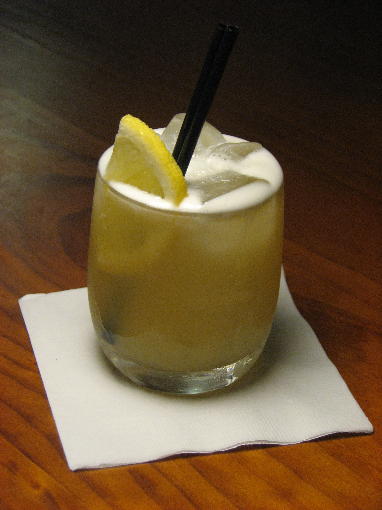
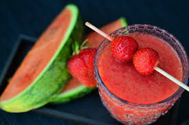
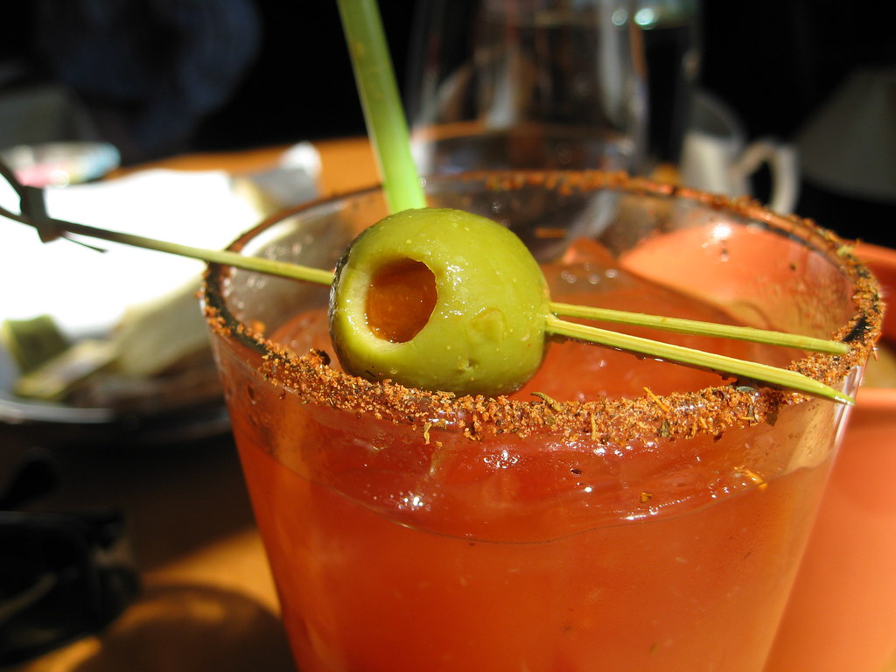
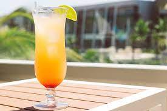
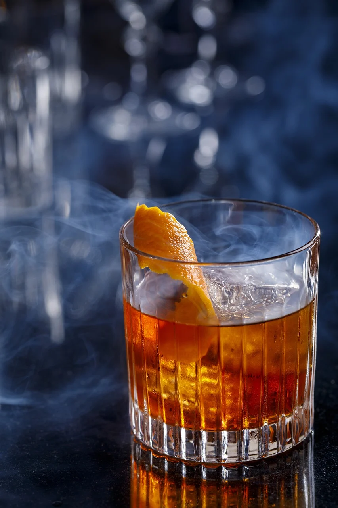
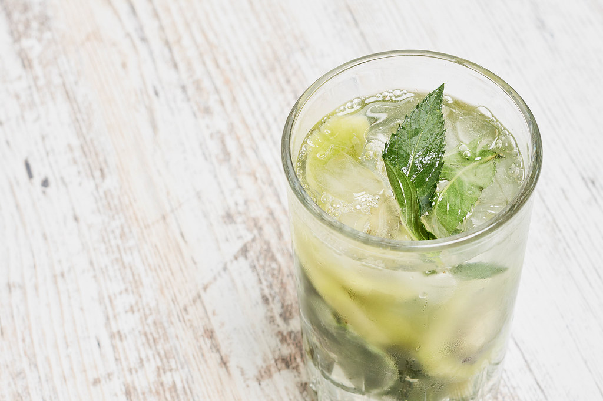
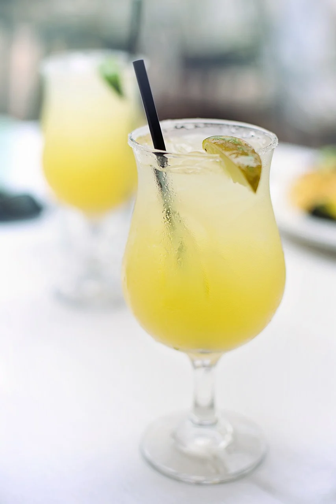
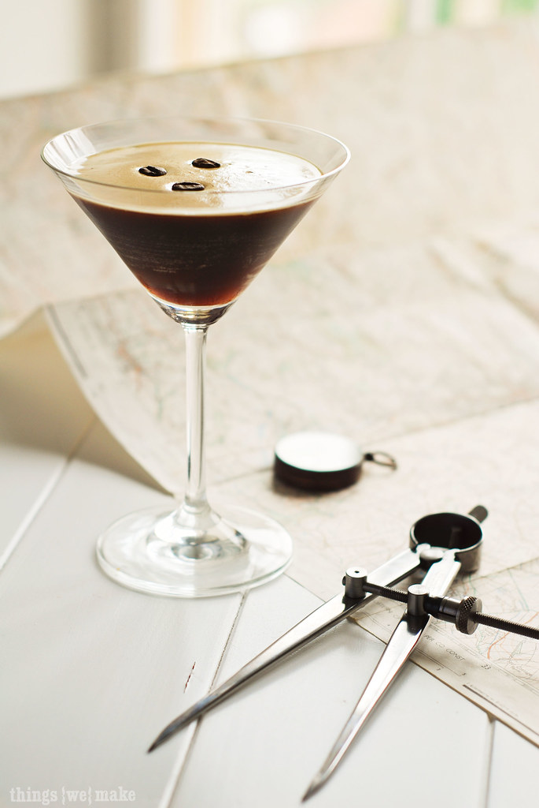

Search for a cocktail or, check out our list of popular drinks!
Popular Drinks

Whiskey Sour
Bourbon, lemon juice,simple syrup, and egg white. Don't let the addition of egg whites turn you away, this drink is delicious and refreshing!
Old Fashioned
A timeless drink, the Old Fashioned consists of, Sweetner, bitters, and bourbon, garnished with an orange peel.Simple and tasty!

Daiquiri
Just like the margarita and bloody mary, there are many ways to order a daiquiri. The classic daiquiri is rum, lime juice and, simple syrup.
Shake it up and ask for also popular strawberry daiquiri.

Bloody Mary
There are many ways to make a Bloody Mary. From spicy, to tangy, and jampacked with garnishes, there are endless versions to this classic drink! For a standard BM:
Vodka, Tomato juice, Worcestershire sauce, Tabasco, Salt and Pepper, garnished with Celery Stalk and Green Olives.

Pain Killer
Pusser's rum (or any rum you like), pineapple juice, orange juice, coconut cream,nutmeg.

Negroni
Negroni is an Italian cocktail, made of one part gin, one part vermouth rosso and one part Campari, garnished with orange peel.

Mojito
Made with mint leaves,white rum, lime juice,simple syrup,club soda. A timeless drink for any occasion!

Margarita
Typically made with silver tequila, orange liqueur, lime, agave, rimmed with salt. This is a regular margirita. You can also ask for flavors such as strawberry,mango,pineapple or, any house made blends!

Espresso Martini
Consists of vodka, coffee liqueur, 1 shot of espresso, and simple syrup.